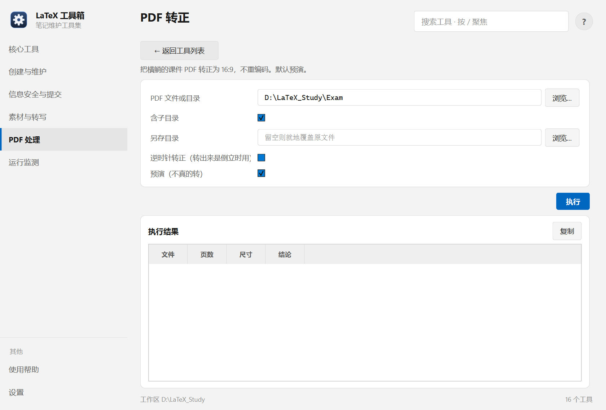

帮助目录 · PDF 处理
把「横版课件被打印成 A4 纵向、内容转了 90°」的 PDF 裁白边、转成 16:9，不重新编码。
| 面板入口 | PDF 处理 → 卡片「PDF 转正」→ 选文件或目录 → 执行 |
|---|---|
| 命令行 | python tools/pdf_upright/pdf_upright.py |

输入默认指向工作区的 Exam 目录；「预演」默认勾着。
| 项 | 说明 |
|---|---|
| PDF 文件或目录 | 两者都接受。 |
| 含子目录 | 默认开。 |
| 另存目录 | 留空则就地覆盖原文件；`-o` 指向源目录会被拒绝（语义是「原件不动」）。 |
| 逆时针转正 | 默认顺时针 90°；转出来倒立就换这个。 |
| 预演（不真的转） | 默认开。只报告每份的判断，不写文件。 |
python tools/pdf_upright/pdf_upright.py 某课件.pdf python tools/pdf_upright/pdf_upright.py Exam -r python tools/pdf_upright/pdf_upright.py Exam -r -o D:/输出目录
| 内容 | 位置 |
|---|---|
| 原件备份 | 系统临时目录（覆盖前自动备份） |
| 依赖 | pymupdf；缺了会自动找装了它的解释器重跑 |
Q：提示「当前 Python 里没有 PyMuPDF」
A：本机工具 venv 里装了它，正常不会出现。若真出现，说明面板找错了解释器：在设置页确认「工具解释器」，或用环境变量 PDF_UPRIGHT_PYTHON 指一个装了 pymupdf 的 python。
Q：有些页没转，有些转了
A：判定依据是「整页贴图占页面面积 40% 以上」，扫描件与纯文字页处理方式不同。看预演里的「结论」列。
Q：转完反而变成倒的
A：源文件原本是逆时针躺的。勾「逆时针转正」重跑。注意这时原件已被覆盖过，建议从备份恢复再转。
Q：画质会下降吗？
A：不会。只改页面框与旋转标记，不重新编码图像。
Q：能处理整本扫描书吗？
A：能，但它只做「转正 + 裁白边」，不做 OCR 与纠偏。扫描书更需要 OCR，那是另一条线。